WEB
Voor het project web moesten wij een verhalen website maken waarop mensen voor, tijdens en na het reizen met de NS verhalen kunnen uitzoeken en lezen. Dit moest doormiddel van een responsive website maken. Hierop zijn ook 3 vormgeven verhalen te zien. Hieronder een paar screenshots van de website en de verhalen op mobiel, tablet en desktop.


 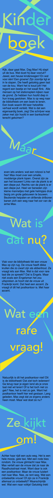
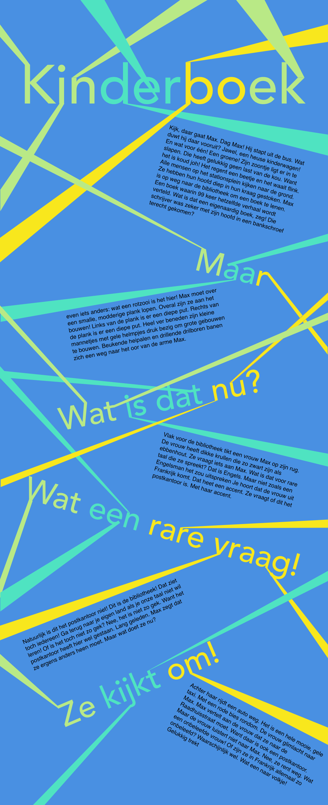
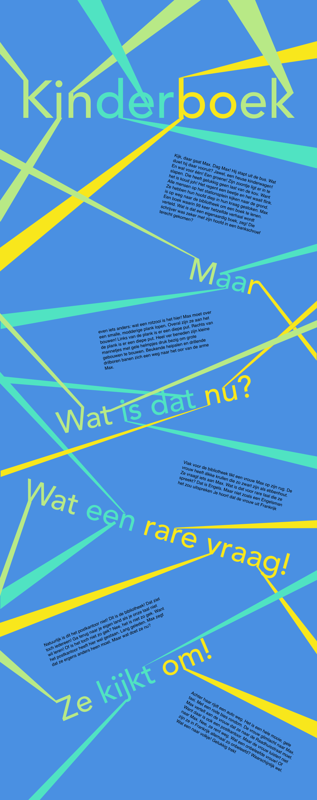
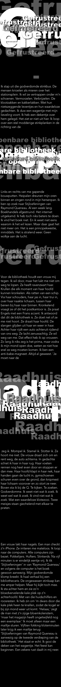
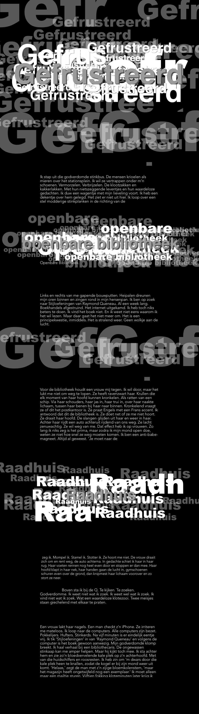
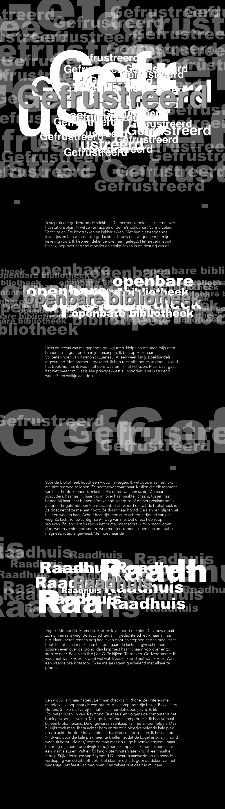
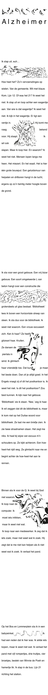
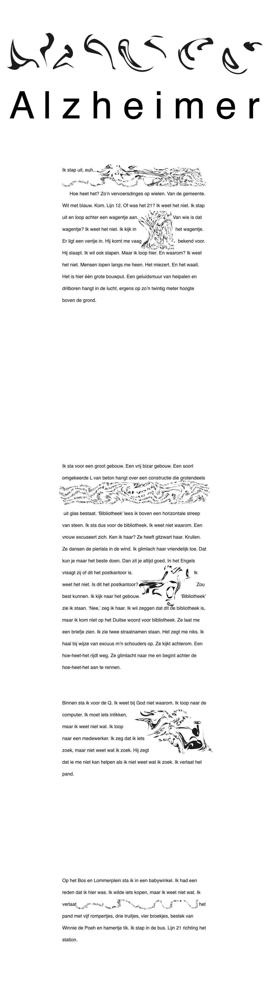
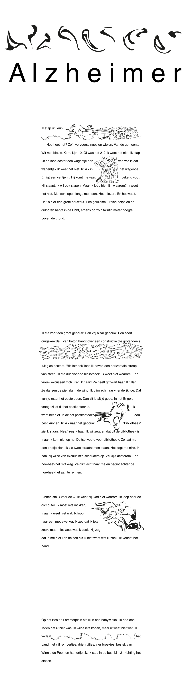
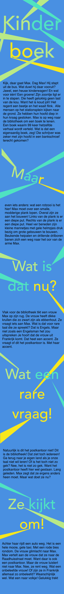
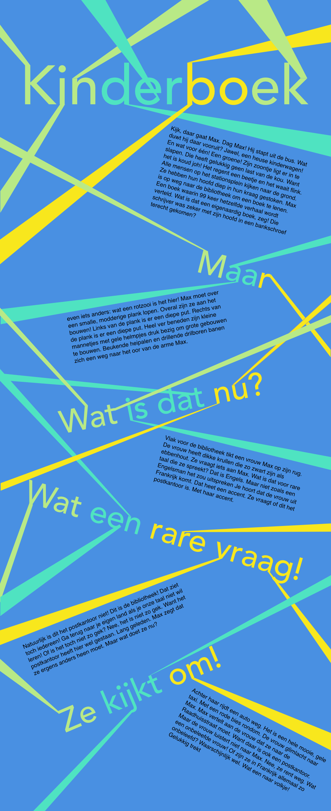
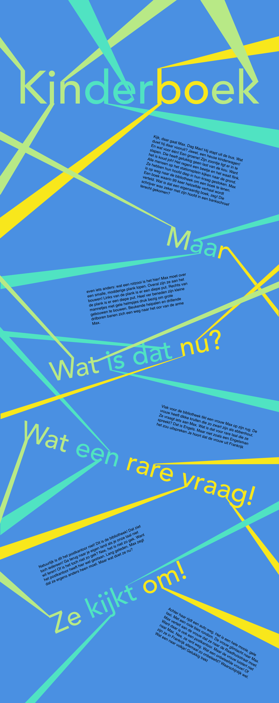
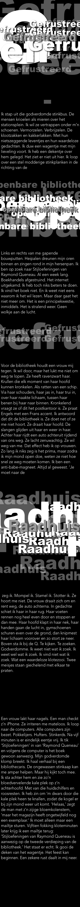
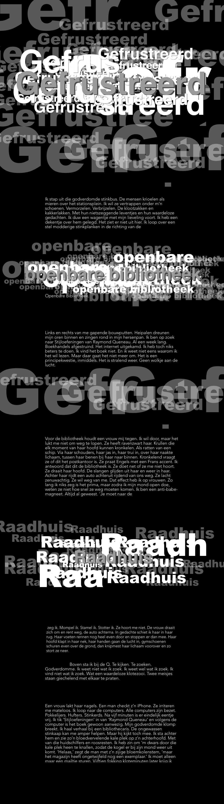
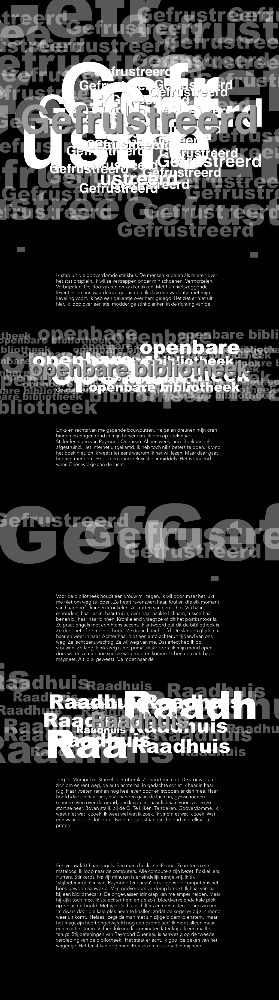
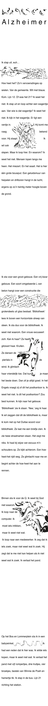
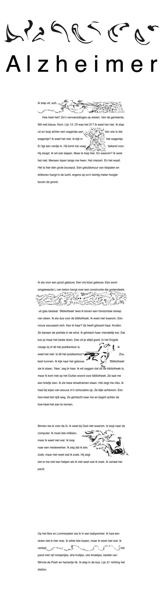
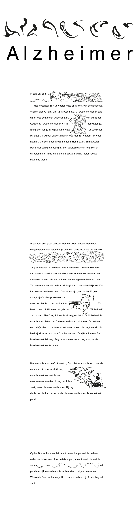